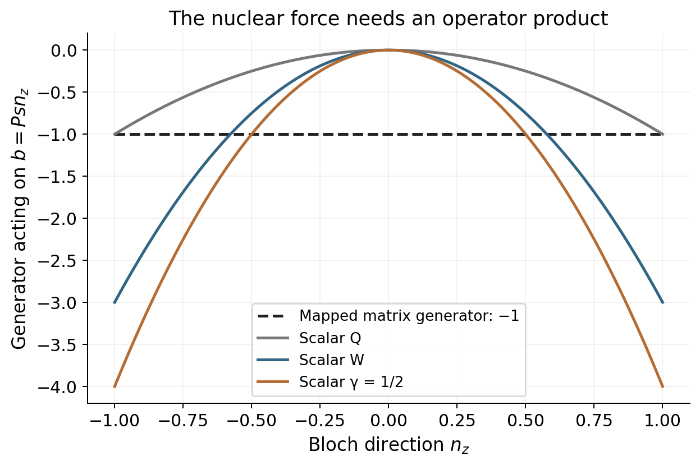
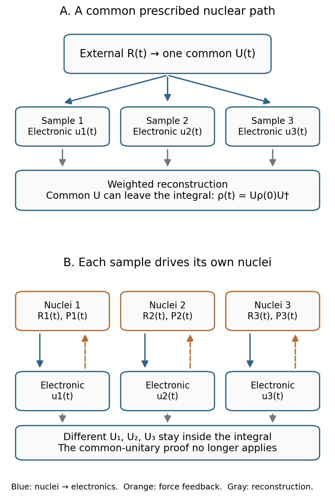

MQC Series - Part VII
CPS Trajectories and Classical Feedback
An exact phase-space representation can still produce approximate trajectories. The key question is which part of the quantum generator ordinary Hamiltonian flow preserves, and which part changes when the electronic sample drives its own nuclei.
Part VI derived the scalar CPS kernel, sphere measure, and dual. This part uses those results to derive the electronic Poisson-bracket correspondence, expose the coupled-generator discrepancy, and compare actual CPS, MMST, spin-mapping, and Ehrenfest calculations.
Notation recalled. Use a fixed orthonormal diabatic basis with \(F\ge2\), set \(\hbar=1\), and let \((R,P)\) denote the nuclear variables. The canonical mapping amplitudes are \(z_n=(x_n+ip_n)/\sqrt2\), with \(J_n=|z_n|^2\), \(z=\sqrt{s}\,u\), and \(u^\dagger u=1\). The scalar CPS representation is
The initial density \(\rho_0\) has symbol \(f_{\rho_0,\gamma}=\operatorname{Tr}(\rho_0K_\gamma)\). With normalized invariant measure \(d\mu\), its reconstruction is
The offset is \(J_n-\gamma\); Parts IV and V use the convention \(\Gamma=2\gamma\). The W choice is \(\gamma_{\mathrm W}=(\sqrt{F+1}-1)/F\), with \(K_{\mathrm W}=\bar K_{\mathrm W}\). The operator representation and reconstruction identity are exact. The remaining issue is the dynamics used between initialization and readout.
1. What the Electronic Poisson Bracket Gets Exactly Right
Part VI established an exact representation, but a simulation also needs a generator. The usual trajectory choice is the scalar Hamiltonian
With canonical brackets \(\{x_n,p_m\}=\delta_{nm}\), the complex amplitudes satisfy \(\{z_n,z_m^*\}=-i\delta_{nm}\). For scalar functions, the electronic bracket is
Take electronic operators \(A,B\), independent of nuclear variables, with symbols \(a_\gamma=z^\dagger Az-\gamma\operatorname{Tr}A\) and \(b_\gamma=z^\dagger Bz-\gamma\operatorname{Tr}B\). Differentiation gives \(\partial_{z_n}a_\gamma=(z^\dagger A)_n\) and \(\partial_{z_n^*}a_\gamma=(Az)_n\). Substituting them yields
The last equality uses \(\operatorname{Tr}[A,B]=0\). This is an exact correspondence of the electronic commutator algebra with the quadratic-symbol Poisson bracket. For the potential Hamiltonian it gives
Hermiticity conserves \(z^\dagger z=s\). The trajectory therefore remains on its sphere without an extra projection. In a real symmetric diabatic basis, the same equation reads \(\dot x=Vp\), \(\dot p=-Vx\).
This exact commutator correspondence is why it is misleading to say simply that “using a Poisson bracket makes electronic evolution wrong.” The missing issue is operator multiplication coupled to nuclear derivatives.
2. Where the Coupled Generator Differs
The commutator calculation does not establish \((AB)_\gamma=a_\gamma b_\gamma\). Define the induced electronic product by \((a_\gamma\star_e b_\gamma)(u)=\operatorname{Tr}[ABK_\gamma(u)]\). Its antisymmetric part is represented correctly by the electronic bracket, but its symmetric part is generally not ordinary scalar multiplication.
A projector gives the simplest check. Since \(C_n^2=C_n\), its product symbol equals \(c_n\). Its ordinary scalar square equals \(c_n^2\), which differs whenever \(c_n\) is not zero or one. Thus a trajectory coordinate can preserve the electronic Lie algebra without preserving the whole quantum operator algebra.
To see why that matters for nuclear motion, take one nuclear coordinate and the matrix Hamiltonian \(H(R,P)=P^2I/(2M)+V(R)\). A nuclear Wigner transform followed by the first-order nuclear gradient expansion gives the adjoint quantum–classical Liouville equation for an observable matrix \(B(R,P,t)\):
The nuclear force term contains the operator anticommutator. Full quantum nuclear propagation can have further Wigner–Moyal terms; even before those terms are considered, the displayed matrix equation differs from scalar Hamiltonian flow. Mapping the matrix equation gives
The independent scalar trajectories instead generate
The first two terms agree. The last replaces a symmetrized operator product by a product of scalar symbols. The CPS review makes this distinction explicitly when comparing its mixed quantum–classical limit with the ordinary full Poisson bracket. [5, supplementary Appendix 5]
A concrete counterexample. Let \(F=2\), \(V(R)=R\sigma_z\), and \(B(R,P)=P\sigma_z\), where \(\sigma_z=\operatorname{diag}(1,-1)\). In the matrix equation, the commutator and position derivative vanish, while \(\partial_RV=\partial_PB=\sigma_z\). Therefore
Write \(\Pi=(I+\boldsymbol n\cdot\boldsymbol\sigma)/2\), with \(|\boldsymbol n|=1\), so \(K_\gamma=(I+s\boldsymbol n\cdot\boldsymbol\sigma)/2\). Put \(q=\operatorname{Tr}(\sigma_zK_\gamma)=sn_z\). The scalar symbols are \(h_\gamma=P^2/(2M)+Rq\) and \(b_\gamma=Pq\); their electronic bracket vanishes. The nuclear bracket gives
At an equatorial direction, this is zero, while the correct matrix generator gives minus one. They are different generators. Special ensemble moments can cancel this difference for a particular initial state or instant; the example does not claim every first averaged derivative is wrong. It does rule out a general pointwise equivalence. Because the potential is linear and the scalar kinetic term quadratic, this example does not require omitted higher nuclear Moyal derivatives to produce the discrepancy.
Consequently, a matched dual can reconstruct the operator information present in the propagated representation, but cannot turn this substituted generator into the exact one. Adding more samples controls integration error, not the missing operator-product terms.
Explore the coupled-generator counterexample
For \(V=R\sigma_z\), \(B=P\sigma_z\), the mapped matrix generator is −1, while the scalar trajectory generator is \(-s^2n_z^2\). Move the selected direction through the equator and poles.
Dashed black: mapped matrix generator. Blue: scalar trajectory generator. Orange: selected direction. This compares generators point by point; it is not a claim about every averaged first derivative.
Python figure: the operator-product discrepancy


3. Prescribed Nuclear Paths Versus Nuclear Feedback
First prescribe one nuclear path \(R(t)\). Every electronic sample then sees the same matrix \(V(R(t))\), with a common unitary \(U(t)\) solving \(i\dot U=V(R(t))U\), \(U(0)=I\). The trajectory and both kernels obey
Insert the propagated dual into the initial reconstruction. The same \(U(t)\) can be taken outside the integral:
This proves exact electronic evolution along the prescribed path, for every allowed radius with its matched representation and readout. The path can be time dependent; “frozen nuclei” is only a special case. The statement concerns the quantum electronic subsystem driven by that path, not the quantum validity of the supplied nuclear path itself.
Now let each mapping sample drive its own classical nuclei. The canonical equations add
The resulting \(R_\alpha(t)\), and hence \(U_\alpha(t)\), depend on the electronic sample. Reconstruction becomes an integral of different unitaries:
There is no common unitary to factor out. The proof above no longer applies; the operator-product discrepancy in Section 2 explains the missing generator structure. In the full quantum problem, electron–nuclear correlations, branching, and nuclear coherence also belong to the evolving joint state. Independent classical paths do not generally retain them.
A focused pure-state representation makes the boundary intuitive. For \(\gamma\ge0\), choose \(J_k=1+\gamma\), \(J_{n\ne k}=\gamma\), and independent uniform phases. Then \(\langle K_\gamma(0)\rangle=C_k\). Along a common nuclear path, linearity gives \(\langle K_\gamma(t)\rangle=UC_kU^\dagger\), using the original kernel as this focused construction's readout. With sample-dependent nuclear feedback, the initial first-moment identity no longer proves equivalence to full-sphere sampling with its dual.
The practical boundary is therefore exact driven-electronic propagation versus generally approximate self-consistent electron–nuclear propagation. It is not a no-go theorem: decoupled systems and particular closed limits can be exact, and CPS can support more complete dynamics than independent Hamiltonian trajectories.


4. MMST and Spin Mapping Viewed Through CPS
At \(\gamma=1/2\), the CPS scalar Hamiltonian is the ordinary MMST quadratic Hamiltonian. Fix the same initial point, potential, and integrator: the electronic equations, nuclear force, conserved total action, and trajectory are identical. The name CPS does not alter that evolution.
What changes in a complete protocol can be the domain and measure, the initial symbol, the treatment of the identity, and the readout. CPS builds unit trace into every force kernel. An unprojected full-Cartesian MMST sampling can have different radii; focused MMST can already fix the radius. Exact MMST with its projection and correct operator symbols can also recover exact observables. There is no general improvement in exact reconstruction merely from renaming the representation.
A useful pointwise difference concerns a common electronic potential. Write \(V(R)=v_0(R)I+\widetilde V(R)\), with \(v_0=\operatorname{Tr}V/F\). In scalar CPS,
In a direct unprojected Cartesian MMST classicalization, the same contribution can instead be \(v_0(\sum_nJ_n-F/2)\). A geometry-dependent common potential then gives a fluctuating force coefficient when the radial sampling fluctuates. The trace-one sphere prevents that artifact at each point. Separating the electronic identity or fixing the norm can repair MMST too; Part IV's focused protocol already has a fixed total action. A constant energy offset creates no force, so it would not test this difference.
Generalized spin mapping starts from coherent-state and Stratonovich–Weyl structure. In canonical Cartesian form, its usual W construction has the same rank-one orbit, the same scalar Hamiltonian form, and \(\gamma=\gamma_{\mathrm W}\). In this specific sense, W spin mapping is contained in the scalar CPS family. Its \(F\)-dependent radius follows from self-duality/Casimir matching rather than assigning \(1/2\) to every oscillator. [6]
Changing only \(\gamma\) reproduces that Hamiltonian parameter choice. Reproducing a complete spin-mapping calculation additionally requires its initial ensemble, identity convention, operator estimator, and numerical propagation. Full-sphere W and focused W are distinct coupled trajectory protocols even when they use the same radius.
Thus CPS clarifies and unifies choices that were previously attached to particular derivations. Spin mapping supplies a distinguished symmetric choice within that comparison. Neither changes the general coupling error derived above simply by fixing a radius.
5. What a Fixed Radius Changes About ZPE Leakage
The remaining MMST concern is often described as “an oscillator falls below its zero-point energy.” In these formulas, however, \(J_n\) is a dimensionless action, not the energy of an independent physical oscillator. Off-diagonal electronic couplings and the matrix \(V(R)\) determine the energy. The mapping oscillator is auxiliary.
Hermitian electronic evolution conserves the total action \(\sum_nJ_n=s\), while allowing redistribution between modes. The raw diagonal symbol \(J_n-\gamma\) can become negative without loss of total action. It is not by itself evidence that a trajectory has acquired a literal forbidden Fock occupation. Exact sphere integration can still give a valid population.
The force issue is more concrete. At one fixed geometry diagonalize \(V\), with energies \(E_k\). Since the transformed actions remain nonnegative and sum to \(s\), the scalar potential is
A linear function on this simplex is minimized by putting all action into the lowest level and maximized by putting it into the highest. Substituting \(s=1+F\gamma\) gives
Positive \(\gamma\) permits a scalar potential below the lowest adiabatic energy and signed contributions to the nuclear force. Fixing the norm does not remove this. Smaller positive values reduce the possible extension, which is one reason a changed radius can affect approximate dynamics.


The bound is local in geometry. It does not establish that an initialized ensemble reaches an endpoint, or provide a universal nuclear-heating budget. Likewise, the negative eigenvalue of W does not prove that every spin-mapping result suffers a particular leakage artifact.
At \(\gamma=0\), the force kernel is a pure-state projector and its potential is inside the physical adiabatic interval. A focused calculation then becomes ordinary Ehrenfest. At negative allowed \(\gamma\), the raw force kernel is positive and its interval lies inside the adiabatic range, but the matched dual is signed. The exact readout can still return zero or one; it is not restricted to the diagonal range of the force kernel.
Removing a below-ground scalar potential does not restore the missing coupled generator or quantum detailed balance. Conversely, a signed single-trajectory symbol does not automatically invalidate an exact representation. ZPE-related dynamical error must be assessed through the actual force, ensemble observables, and a controlled reference, rather than negativity alone.
6. The Actual Trajectory Workflow
The mathematical pieces now specify an implementable calculation. For clarity, take a factorized initial state \(\rho_N\otimes\rho_e\), a chosen nuclear phase-space distribution \(f_N(R_0,P_0)\), and a fixed-basis electronic observable \(O\). The following is the full-sphere scalar CPS approximation, often described as extended classical mapping in the corresponding formulation:
- Choose the representation and readout. Select \(F\), \(\gamma>-1/F\), \(s=1+F\gamma\), and the matched \(\bar K_\gamma\). Choosing W makes them identical. This specifies symbols; it is not yet a propagation accuracy claim.
- Prepare the nuclear ensemble. Sample \((R_0,P_0)\) from the declared \(f_N\). A thermal Wigner distribution and a classical Boltzmann distribution are different preparations. If a signed nuclear distribution is used, retain its weight as well.
- Sample electronic directions. For uniform sampling, draw independent real and imaginary Gaussian components, normalize to \(u^\dagger u=1\), and set \(z_0=\sqrt{s}\,u_0\). This gives the invariant measure, rather than a radial Gaussian distribution.
- Attach the initial electronic weight. Compute \(w_e=F\operatorname{Tr}(\rho_eK_\gamma(u_0))\). For a proposal density \(q(u)\) relative to \(d\mu\), use \(w_e=F\operatorname{Tr}(\rho_eK_\gamma)/q(u)\), with support wherever needed. A basis pure state uses the explicit formula in Part VI, Section 7.
- Propagate each sample. Integrate \(i\dot z=V(R)z\), \(\dot R=P/M\), and \(\dot P=-\operatorname{Tr}(K_\gamma\nabla_RV)\). A unitary electronic step preserves the sphere; a coupled integrator still needs time-step convergence. The force uses the Hamiltonian kernel \(K_\gamma\), not an arbitrarily substituted dual.
- Read the observable with the declared estimator. For full-sphere sampling, evaluate \(\bar o_\alpha(t)=\operatorname{Tr}[O\bar K_\gamma(u_\alpha(t))]\) and average \(w_{e,\alpha}\bar o_\alpha(t)\), together with any nuclear weights.
- Separate convergence from physical accuracy. Check weight normalization, norm and energy diagnostics, time-step refinement, and independent sampling batches. Compare the final observable with a quantum or controlled reference to assess the dynamical approximation.
The population formula for uniform electronic sampling and equally sampled positive nuclear initial conditions is explicitly
for the initial state \(C_k\). “Equal averaging” here means equal averaging of weighted contributions. It does not mean that each trajectory has weight one and supplies a physical population. For geometry-dependent observables, use the consistently transformed operator \(O(R_\alpha(t))\); an ensemble population requires a shared basis or a clearly specified local projector.
In a focused protocol, replace the full-sphere initialization and dual formula by its own moment-matching initialization and estimator. Do not combine a focused ensemble with the full-sphere dual merely because both carry the same \(\gamma\). In ordinary focused initialization, negative \(\gamma\) would require negative inactive actions and is unavailable; that does not invalidate the full-sphere representation at negative \(\gamma\).
For a parameter comparison, pair the nuclear initial conditions and hold the observable, timestep accuracy, and uncertainty target fixed. A change of radius changes forces as well as readout variance. Selecting \(\gamma\) against one observable can improve that approximate calculation, but its transferability to other observables, temperatures, and long-time behavior needs an independent test.
7. CPS, MMST, Spin Mapping, and Ehrenfest Side by Side
The useful comparison is between complete protocols. All four can propagate electronic amplitudes exactly along a prescribed nuclear path. Their main differences appear in initialization, force kernels, estimators, and the coupled closure.
| Protocol | Electronic initial ensemble | Nuclear force | Population readout |
|---|---|---|---|
| Full-sphere scalar CPS | Fixed-radius Haar directions, initial symbol weight; any allowed \(\gamma\) | \(-\operatorname{Tr}(K_\gamma\nabla V)\) | Initial weight times \(\operatorname{Tr}(C_n\bar K_\gamma)\) |
| MMST-based methods | Protocol dependent: projected Wigner, focused, or windowed sampling; ordinary oscillator offset \(1/2\) | The chosen quadratic mapping Hamiltonian, with its identity convention | Projected symbols or the method's specified estimator/windows |
| Full-sphere W spin mapping | Coherent-state invariant ensemble and W initial symbol | Same scalar form at \(\gamma_{\mathrm W}\), with the identity treated separately or equivalently exactly | W symbol, since W is self-dual |
| Focused W / Spin-MInt protocol | Focused actions and phases at the W radius | W scalar force with the chosen momentum-integral propagation | The focused protocol's kernel estimator |
| Ordinary Ehrenfest | Physical density or amplitudes for each nuclear initial condition | \(-\operatorname{Tr}(\rho_\alpha\nabla V)\) | \(\operatorname{Tr}(C_n\rho_\alpha)\), with nuclear ensemble averaging |
For a pure initial electronic state, focused \(\gamma=0\) gives \(K=\rho=zz^\dagger\), \(z^\dagger z=1\), and exactly the Ehrenfest equations and readout. A generic full-sphere Q calculation instead uses a Q initial symbol and P dual, with different sample-dependent forces; it is not automatically ordinary focused Ehrenfest. A mixed-state Ehrenfest calculation can propagate its density directly, and need not equal an ensemble of pure-state decompositions after nonlinear nuclear feedback.
At a matched radius, Hamiltonian, initial ensemble, and estimator, CPS and a corresponding MMST implementation can coincide. W spin mapping adds a particular geometry and symmetric pairing; Spin-MInt adds a propagation scheme. Improvements seen between unmatched protocols cannot be assigned to “the mapping theory” alone.
The answer to what CPS improves is therefore concrete. It provides a finite-state constrained representation, pointwise normalization of the identity, an explicit dual for operator recovery, and a systematic account of parameter choices. It also identifies the boundary between exact electronic algebra and approximate coupled trajectories. Accurate nuclear feedback and quantum equilibrium remain properties to demonstrate for a specified dynamical method.
Sources and Reproducible Material
The kernel and dual derivations are in Part VI. The coupled-generator counterexample is an explanatory calculation, not a published benchmark reproduction. The linked numerical check tests electronic reconstruction only.
- M. Thoss and G. Stock, “Mapping approach to the semiclassical description of nonadiabatic quantum dynamics,” Physical Review A 59, 64 (1999). Journal. Exact oscillator mapping and subsequent semiclassical evaluation.
- X. He and J. Liu, “A new perspective for nonadiabatic dynamics with phase space mapping models,” Journal of Chemical Physics 151, 024105 (2019). Journal. Introduction and conclusions distinguish the unified operator construction, constrained population approach, and approximate nonadiabatic dynamics.
- X. He, Z. Gong, B. Wu, and J. Liu, “Negative Zero-Point-Energy Parameter in the Meyer–Miller Mapping Model for Nonadiabatic Dynamics,” Journal of Physical Chemistry Letters 12, 2496–2501 (2021). Journal · Open manuscript. Constrained kernel, inverse kernel, admissible parameter interval, and the distinction between exact reconstruction and classical nuclear propagation.
- J. Liu, X. He, and B. Wu, “Unified Formulation of Phase Space Mapping Approaches for Nonadiabatic Quantum Dynamics,” Accounts of Chemical Research 54, 4215–4228 (2021). Journal. The motivations and development of the unified mapping and constrained electronic phase-space framework.
- X. He, B. Wu, Y. Shang, B. Li, X. Cheng, and J. Liu, “New Phase Space Formulations and Quantum Dynamics Approaches,” WIREs Computational Molecular Science 12, e1619 (2022). Journal · Open manuscript with supporting information. CPS and weighted CPS; supplementary Appendix 5, Eqs. (152)–(153), distinguishes the mixed quantum–classical generator from the ordinary full Poisson bracket.
- J. E. Runeson and J. O. Richardson, “Generalized spin mapping for quantum-classical dynamics,” Journal of Chemical Physics 152, 084110 (2020). Journal · Open manuscript. \(SU(F)\), Stratonovich–Weyl kernels, Casimir scale, identity treatment, and full-sphere versus focused sampling.
- cps_visual_examples.py reproduces the generator comparison and propagation diagrams, together with the Part VI representation examples. Numerical receipt.
- cps-explorer.js supplies the real-time counterexample explorer.
- cps_dual_kernel_checks.py reproduces the matched-dual check, the mismatched-readout control, and the analytic potential-interval figure using NumPy and Matplotlib.
- Spin-mapping mathematical foundations develops the generator algebra in more detail.
python assets/code/mqc/cps_dual_kernel_checks.py